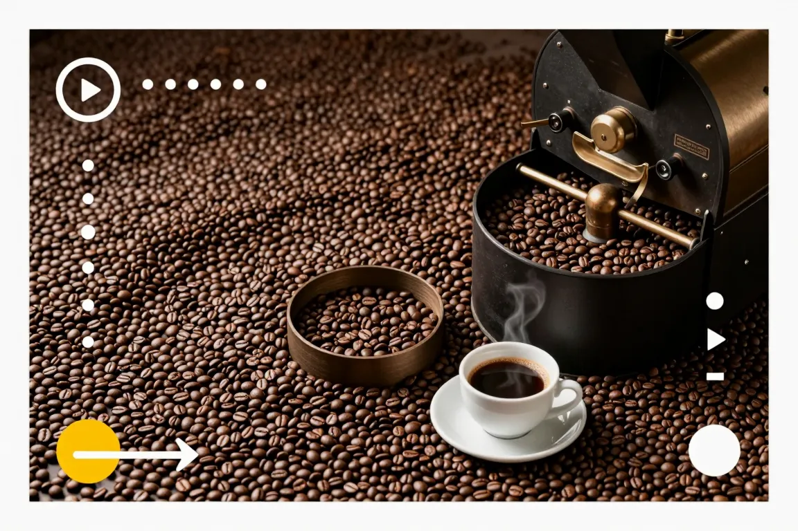

веб · 2022–now · также: Фоторежим, Карусель со свайпом, Пост из слайдов
Набор из 4–10 статичных изображений, которые зритель листает, с одной строкой текста на каждом слайде и зацепкой на первом. Instagram добавил карусели в 2017 году, а TikTok добавил фоторежим в 2022.

Главная идея
Замедляйте ленту: одна идея на каждом неподвижном слайде, один свайп за раз.
Принципы дизайна
Берите кадр 4:5 размером 1080 x 1350 px или 9:16 размером 1080 x 1920 px для каждого слайда.
Делайте слайд 1 зацепкой: заголовок 72 px из 6 слов и меньше.
Держите 1 идею и 1 строку текста 40 px на слайде, с полями 64 px.
Берите 5–10 слайдов и показывайте счёт точками 8 px внизу.
Повторяйте одну сетку, цвет и шрифт на всех слайдах, чтобы набор читался как целое.
Намекайте на свайп стрелкой или обрезанным элементом у правого края слайда 1.
Заканчивайте призывом сохранить или поделиться 44 px с кнопкой со 100% контраста.